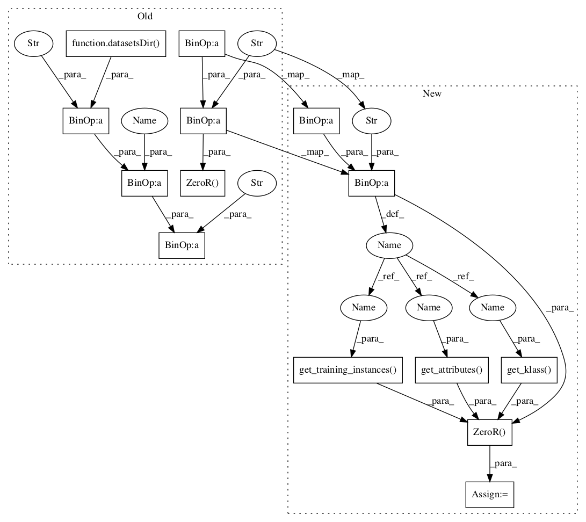

Pattern ID :348

Before Change
self.assertEqual("b", classifier.majority_class())
def test_majority_class_is_set_on_test_instances(self):
zeror = z.ZeroR(datasetsDir(self) + "test_phones" + SEP + "phoney")
zeror.test(datasetsDir(self) + "test_phones" + SEP + "phoney", False)
i = 0
for i in range(4):
self.assertEqual("b", zeror.test_instances[i].classifiedKlass)
After Change
self.assertEqual("b", classifier.majority_class())
def test_majority_class_is_set_on_test_instances(self):
path = datasetsDir(self) + "test_phones" + SEP + "phoney"
zeror = z.ZeroR(format.C45_FORMAT.get_training_instances(path), format.C45_FORMAT.get_attributes(path), format.C45_FORMAT.get_klass(path), format.C45_FORMAT)
zeror.test(format.C45_FORMAT.get_test_instances(path), False)
i = 0
for i in range(4):
In pattern: SUPERPATTERN
Frequency: 3
Non-data size: 14
Instances
Fragment ID: 1080368
Project Name: nltk/nltk
Commit Name: b631c3096c580f51793be947af3d5d71ffde5ccf
Time: 2007-04-28
Author: sumukh.ghodke@gmail.com
File Name: nltk_lite/contrib/classifier_tests/zerortests.py
Class Name: ZeroRTestCase
Method Name: test_majority_class_is_set_on_test_instances
Fragment ID: 1080369
Project Name: nltk/nltk
Commit Name: b631c3096c580f51793be947af3d5d71ffde5ccf
Time: 2007-04-28
Author: sumukh.ghodke@gmail.com
File Name: nltk_lite/contrib/classifier_tests/zerortests.py
Class Name: ZeroRTestCase
Method Name: test_can_classify_data_having_continuous_attributes
Fragment ID: 1080370
Project Name: nltk/nltk
Commit Name: b631c3096c580f51793be947af3d5d71ffde5ccf
Time: 2007-04-28
Author: sumukh.ghodke@gmail.com
File Name: nltk_lite/contrib/classifier_tests/zerortests.py
Class Name: ZeroRTestCase
Method Name: test_majority_class_is_set_on_test_instances
Fragment ID: 1080373
Project Name: nltk/nltk
Commit Name: b631c3096c580f51793be947af3d5d71ffde5ccf
Time: 2007-04-28
Author: sumukh.ghodke@gmail.com
File Name: nltk_lite/contrib/classifier_tests/zerortests.py
Class Name: ZeroRTestCase
Method Name: test_verify_returns_correct_confusion_matrix